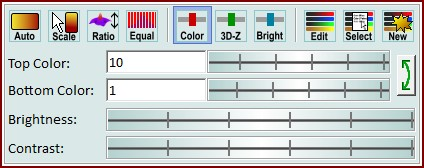
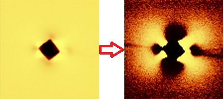
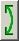

|
图像查看器颜色标尺
|
您可以使用图像查看器环形菜单打开这些功能。

自动颜色标尺：
执行自动颜色标尺。
鼠标颜色标尺：
将鼠标模式更改为"标尺颜色鼠标模式"。
在图像中点击某个位置，将当前光标位置处的图像值设置为新的颜色标尺顶部值。
点击时按住 Shift 键可改为设置底部颜色标尺值。
比例：
将3D-Z标尺调整到正确的XY/Z比例。仅适用于形貌图像。
均衡：
均衡颜色直方图。用于显示浮点图像所有动态范围的高对比度。如果您的图像有两个"平台"，每个包含可能有趣的小值变化，这可能会很有用。
如果勾选，颜色表颜色不再使用顶部和底部颜色标尺值以线性方式分配。而是通过均衡直方图以非线性方式分配，以便在相同数量的"浮点变化"中获得相同数量的"颜色变化"：

颜色标尺：
切换到颜色标尺模式。选中后，编辑框和滑块将更改颜色标尺。
如果只有一种标尺可以更改，此按钮将被禁用。
3D-Z标尺：
切换到3D-Z标尺模式。选中后，编辑框和滑块将更改3D-Z标尺。
仅当浮点图像用作3D-Z信息图像时才有效。
亮度标尺：
切换到亮度标尺模式。选中后，编辑框和滑块将更改亮度标尺。
仅当浮点图像用作亮度信息图像时才有效。
打开当前使用的颜色配置文件对象的编辑器（参见颜色配置文件数据）。
在这里您可以选择其他颜色表或更改颜色循环，定义顶部和底部颜色以标记例如"极值像素"。
所有使用相同颜色配置文件对象的图像查看器也会更改其颜色绘制。
选择另一个颜色配置文件对象：
打开一个选择器窗口，选择您之前使用以下选项创建的另一个颜色配置文件对象。
创建新的颜色配置文件对象：
创建一个新的颜色配置文件对象并将其分配给当前的图像查看器。
您可以使用上述两个功能在另一个图像查看器中使用新的颜色配置文件对象。
如果没有创建额外的颜色配置文件对象，所有查看器始终会使用同一个自动创建的默认颜色配置文件。
顶部 / 底部编辑框 + 滚轮：
在这里您可以更改顶部和底部的颜色/3D-Z/亮度值。
滚轮可以无限移动；鼠标位置在离开滚轮区域时始终会移回中心。

交换顶部和底部标尺：交换顶部和底部标尺值。
亮度（滚轮）：
同步更改顶部和底部值，这会更改亮度。
对比度（滚轮）：
以相反方向更改顶部和底部值，这会更改对比度。